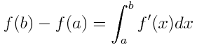
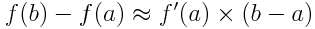
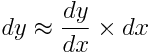

In general,
But, as b approaches a...
Or, if we let y = f(x)
Alternatively, observe that the highlighted length in the top diagram approximates the magnitude of the highlighted area in the bottom diagram when Δx is small. The smaller Δx is, the better the approximation.